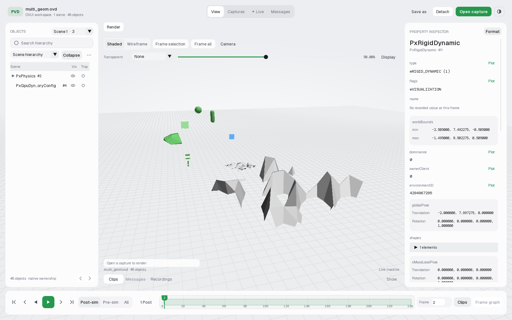

Project
OVD Viewer
Explore PhysX OVD captures and live recordings.

OVD Viewer helps you inspect PhysX simulation data recorded in OVD captures. Explore scenes, move between recorded frames, and inspect objects and their properties in a desktop application built with OvUI.
What you can do
- Open OVD files and navigate scenes, objects and frames.
- Inspect recorded properties, contacts, geometry and material references.
- Record live OVD streams over TCP and select captures for inspection.
- Use documented headless OVD functions for scripted analysis without opening the viewer.
Run the viewer
Start with the qualified release: Windows ZIP (SHA-256) or Linux ZIP (SHA-256), plus the matching licenses and sources companion.
- Choose the Windows or Linux archive supplied with your release and verify its SHA-256 checksum.
- Extract the complete archive. On Linux, use
unzipto preserve executable permissions. - Start
OvdNext.cmdon Windows or./OvdNext.shon Linux. - Select Open capture and choose an OVD file. Select a body in the scene tree, then read its mass in the attributes panel.
- Move to a recorded frame to inspect its values. To display contacts, select or focus the matching Pre-sim frame.
Python, OvUI and application dependencies are bundled. You do not need a system Python installation or a compiler.
Source and developer guide
Browse the published v0.2.21 application source and its source distribution notes.
Open the interactive field guide to record and ingest OVD, inspect rigid bodies, articulations and contacts, select TCP recordings while streaming, and side-load evidence files. It uses recorded PhysX attributes and worked inspection cases.
The developer guide and AI skills include
headless inspection examples
and source-build prerequisites.
To read offline, keep the complete docs/projects/ovdnext/developer/
directory from the Labs checkout and open interactive/index.html.
Platforms
- Windows 11 x64: a graphics driver supporting OpenGL 3.3 and the x64 Vulkan loader.
- Ubuntu 22.04 x64: a desktop session using X11 or XWayland,
NVIDIA drivers including
libcuda.so.1, OpenGL 3.3,libEGL.so.1/libGL.so.1, and hostlibstdc++/libgcc.
The supported scope is the bundled viewer and documented headless OVD functions.
Licensing
NVIDIA-owned application code uses Apache 2.0. Bundled components retain their own licenses; see the LICENSE and NOTICE files and component notices accompanying your release.